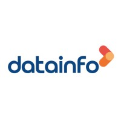

DataInfo - Sustentação de software no INPE
06/2025 - hoje
A Datainfo é uma empresa brasileira com foco em soluções de transformação digital e outsourcing de TI. Atua desde 2002, com sede em Blumenau (SC), e conta com cerca de 700 profissionais, oferecendo serviços no Brasil e no exterior, tanto para a iniciativa privada, quanto para a pública.
Site da empresaMeu papel na Datainfo
Atuo como integrante da equipe de sustentação de software que presta serviço para a divisão de Queimadas do INPE.